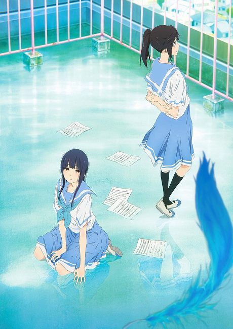
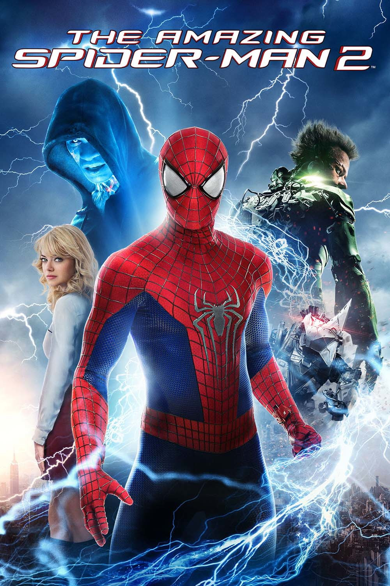

1. Liz to Aoi Tori
Intrdução a Obra:
Liz to Aoi Tori ou Liz and blue bird é um filme animado pelo studio Kyoto Animation e é uma side story da série Hibike: Euphonium (Sounds: Euphonium) um anime sobre bandas de sopro escolares, o filme tem foco maior nas personagens Mizore Yoroizuka e Nozomi Kasaki, onde seus concfitos são explorados e encenados utilizando a lenda japonesa de Liz e o passaro azul (Liz to Aoi Tori).
A Lenda Liz to Aoi Tori:
Liz to Aoi Tori é uma lenda japonesa que conta a história de Liz uma garota que vivia dias pacatos e rotineiros sozinha longe da cidade, até um dia após uma tempestade ela encontrar uma garota de cabelos e vestido azul desmaiada perto de sua casa, ela acolhe a garota que se chama Aoi e as duas começam a viver longos e divertidos dias. Porém algo era claro para Liz, ela era uma gaiola que impedia o passaro azul de voar, e em um dia após uma longa discussão, as duas se separam. A lenda tem uma versão em orquestra que foi encenada pelo Cast de Hibike durante o filme "Hibike: Euphonium Chikai no Finale".
Aspectos Técnicos:
O filme é lindo e impecável em todos os aspectos, ambientação, design de personagens, trilha sonora e principlamente direção, dirigido por Naoko Yamada (que trabalhou ao lado do diretor da série Hibike: Euphonium) ela buscou trazer ao máximo todos os sentimentos que a obra queria passar e o resultado foi o melhor trabalho dela como diretora. Em entrevista a mesma disse: "Quando Takeda-san me trouxe sua nova história eu queria adaptar toda sua delicadeza e emoção em um único painel".
Minha opinião Sobre:
Quando fui assistir esse filme confesso que fiquei muito receosso de que não fosse gostar, porém após o fim do filme só conseguia sentir que tinha acabado de ver algo maravilhoso, com uma construção muito minucioza e cheio de takes que a diretora introduz pra conversar com você, nada no filme está lá sem nenhum significado maior, com certeza minha melhor experiência com animação. Para aqueles que gostariam de experimentar a série, recomendo a ordem: Hibike: Euphonium; Hibike: Euphonium 2; Liz to Aoi Tori; Hibike: Euphonium Chikai no Finale.
Trailer:
Clique Aqui!2. Vingadores Guerra Infinita

Introdução a Obra:
Vingadores Guerra Infinita foi um dos últimos filmes da Fase 3 de filmes da Marvel, onde Thanos finalmente faz sua aparição para por seus planos em prática.
Minha Opinião Sobre:
É um filme que eu queria ter tido a experiência de ter ido ver no cinema, porém é um ótimo filme que junta vários dos heróis favoritos de todos contra um Thanos que no universo cinematográfico é um vilão incrível.
Trailer:
Clique Aqui!3. O Espetacular Homem Aranha 2: A Ameaça de Electro
Introdução a Obra:
Sequencia de "O Espetacular Homem aranha" neste filme Piter segue tentando superar a promessa que fez ao pai de Gwen Stacy entrando em conflito tanto com ela quanto consigo mesmo, ao mesmo tempo a volta de seu melhor amigo pra Manhattan e a aparição de um novo inimigo irão somar em seus conflitos internos.
Minha Opinião Sobre:
De todos os universos do cabeça de teia esse pra mim tem o melhor homem aranha, o "universo espetacular" tráz um Piter Park totalmente humanizado e ao longo do filme ver todas as decisões que ele faz é algo que soma bastante pra experiência.
Trailer:
Clique Aqui4. Homem Aranha no Aranhaverso

Introdução a Obra
Homem Aranha no Aranhaverso é um filme animado onde em um plano de recuperar sua familia o rei do crime cria uma maquina que iria trazer sua mulher e filho de um universo paralelo, porém tudo da errado e o Piter Park daquele universo morre em batalha, e o erro resulta em vários homens aranhas de outros universos se unindo em uma tentativa de novamente parar o rei do crime e devolver todos pros seus respectivos universos.
Minha Opinião Sobre:
Confesso que esperava algo grandioso desse filme depois de ver as criticas, porém me deixou um pouco decepcionado quando assisti, mas isso não significa que o filme é ruim, é um filme muito bom e muito divertido de se assistir, porém achava que tinha algo mais profundo.